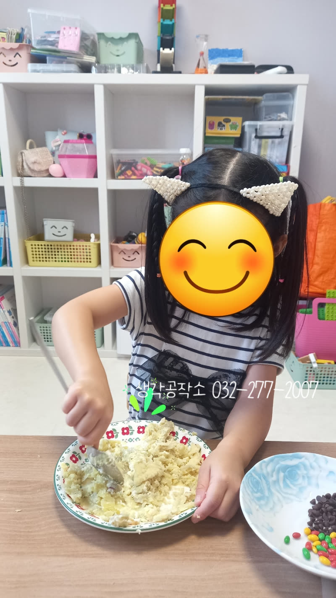
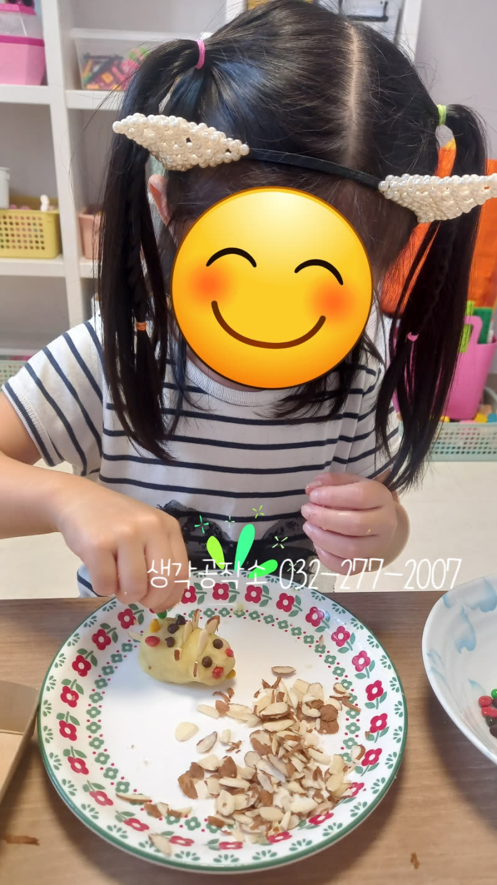
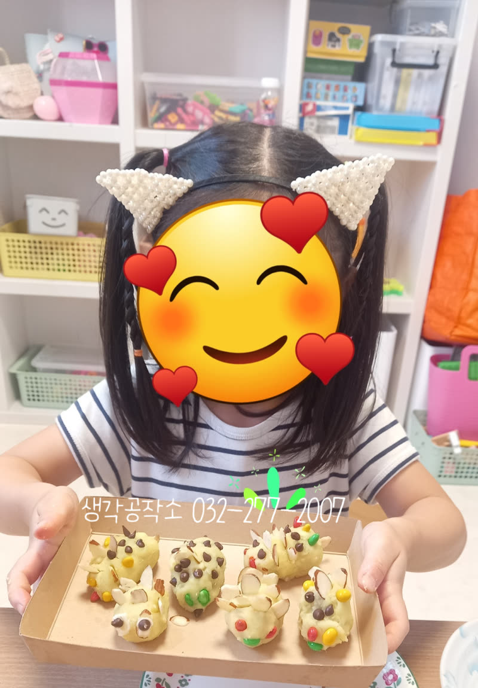
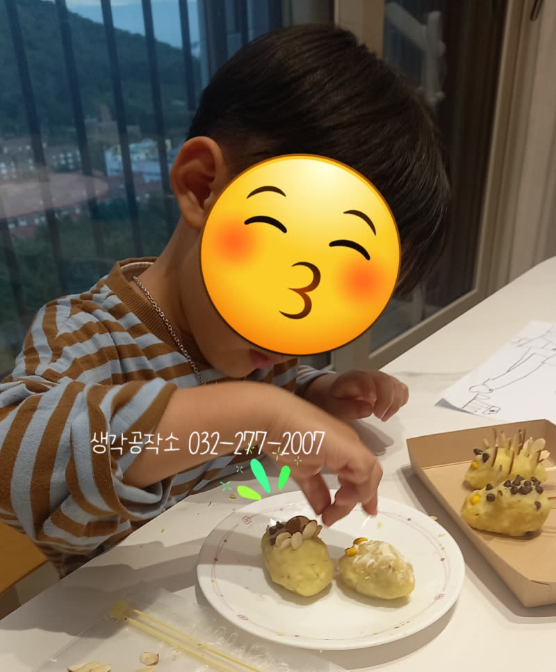
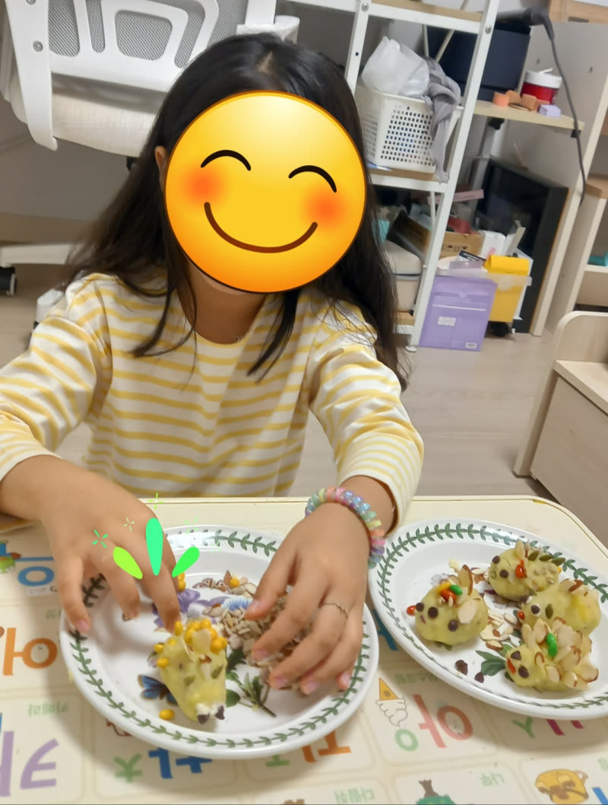
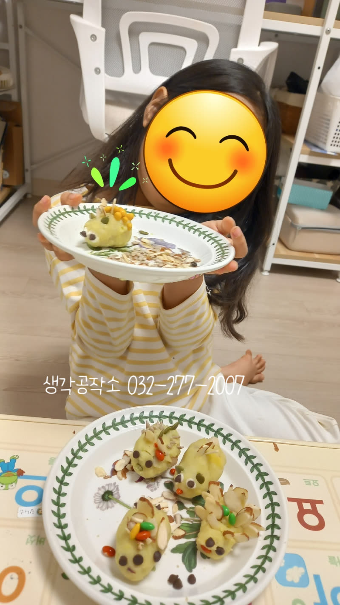
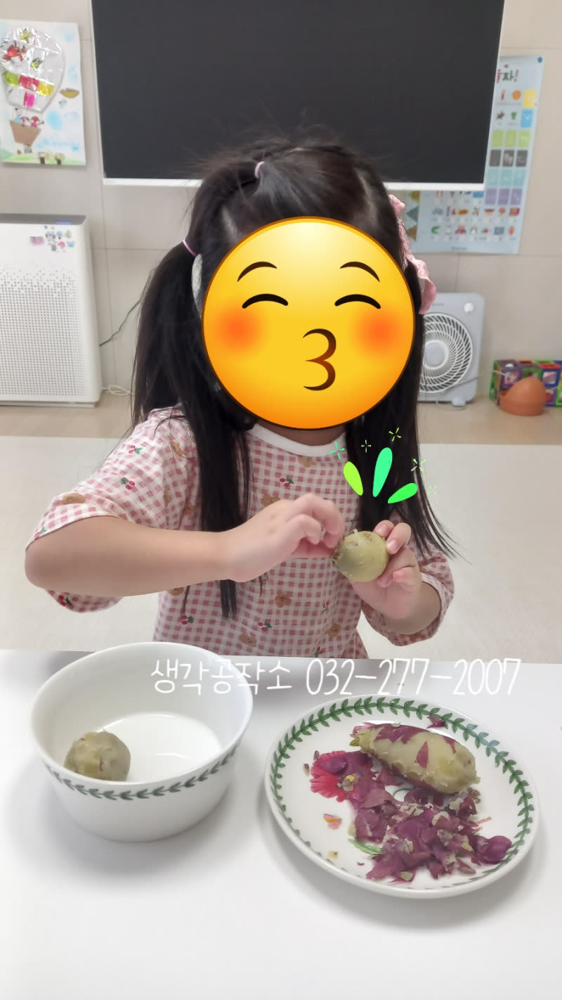
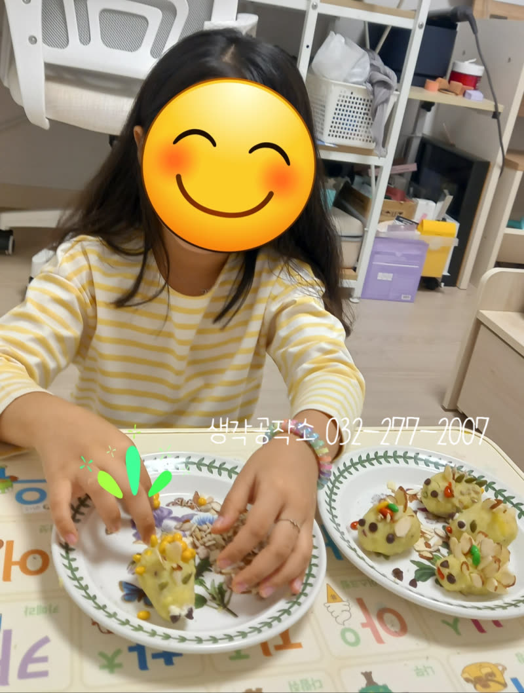
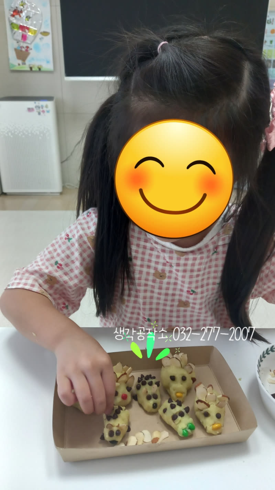

"고구마 고슴도치 패밀리 총출동!" 😋 스스로 만들어 더 맛있었던 아이들의 오감만족 요리 수업! ②
안녕하세요, 생각공작소입니다. :)
아이들의 반짝이는 눈빛과 해맑은 웃음이 너무나 사랑스러웠던
'고구마 고슴도치 만들기' 현장 두 번째! 🦔🍠
지난번 사진첩을 정리하다 보니,
소중한 순간들을 카메라에 많이 담았더라고요.
한 번으로 다 보여드리기 아까운
아이들의 생생한 모습을 다시 한번 소개합니다! 😋



식탁 위에 놓인 따끈한 고구마는 🍠
아이들에 의해 새로운 세상으로 변신을 시작합니다.
껍질을 벗기고 뜨끈한 고구마를 조심스럽게 만져보며
"와! 부드러워요!", "따뜻해!" 하는 탄성이 쏟아집니다.
'으깨으깨', '비벼비벼'
소근육을 활용해 고구마를 반죽하는 동안
아이들의 얼굴에는 진지함과 즐거움이 교차했습니다.
사진 속 아이들의 초롱초롱한 눈빛과 집중하는 모습,
고사리 같은 손으로 고구마 반죽을 주무르는 섬세한 움직임
하나하나 모두 놓치고 싶지 않은 순간들이었습니다.



이제 반죽한 고구마로 고슴도치 친구들을 만들 시간!
"나는 좀 더 뚱뚱한 고슴도치 만들래!"
"제 고슴도치는 눈이 초롱초롱해요!" 하며
아이들의 개성이 한껏 드러났습니다.
고구마 위에 초코볼로 눈을 붙이고,
프레첼이나 견과류로 뾰족한 가시를 세우는 동안,
아이들마다 전혀 다른 '고슴도치 패밀리'가 탄생했습니다. 🧑🏻👩🏻👦🏻
어떤 고슴도치는 시크하게 한쪽 눈을 감고 있고,
어떤 고슴도치는 배시시 웃는 얼굴을 하고 있었죠.
아이들의 무한한 상상력은 그 어떤 틀에도 갇히지 않고
자유롭게 표현되었습니다.
"내 고슴도치랑 친구 하면 좋겠다!"라며
사회성을 발휘하는 모습도 포착되었습니다.
아이들 각자의 고유한 생각과 시선이 담긴 작품들을 보며,
선생님들도 연신 감탄사를 쏟아냈습니다. 🫢



정성껏 만들어낸 고구마 고슴도치를 보며
아이들은 저마다 뿌듯한 표정을 지었습니다.
자신이 만든 작품을 카메라 앞에서 자신감 있게 들어 보이고,
환한 미소를 짓는 아이들의 모습은 그 자체로 감동이었습니다. 😄
완성된 고슴도치를 맛보며 "세상에서 제일 맛있어요!"라고
외치는 순간은 이번 활동의 클라이맥스였죠.
저희 생각공작소는 아이들이 직접 손으로 만지고 만들면서,
실패를 두려워하지 않고
스스로 해냈다는 성취감을 느끼는 과정을 중요하게 생각합니다.
카메라에 담긴 아이들의 환한 미소와 빛나는 눈빛은
단순히 맛있는 요리 활동을 넘어,
스스로의 가능성을 발견하고 자존감을 키워가는 소중한 성장 기록이 됩니다.
아이들의 매 순간이 빛나는 추억으로 가득할 수 있도록,
생각공작소가 아이들의 오감을 깨우는 행복한 경험들을 계속 만들어가겠습니다!
오감 쑥쑥! 생각 쑥쑥!
📞 생각공작소 032-277-2007